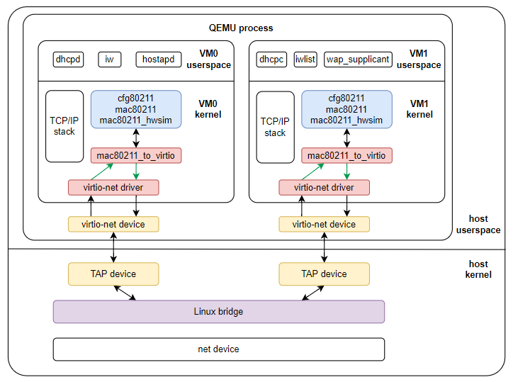
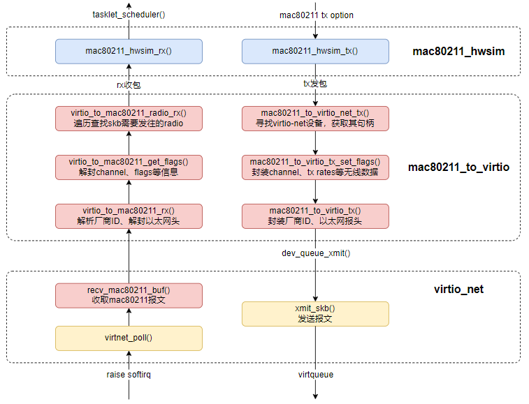
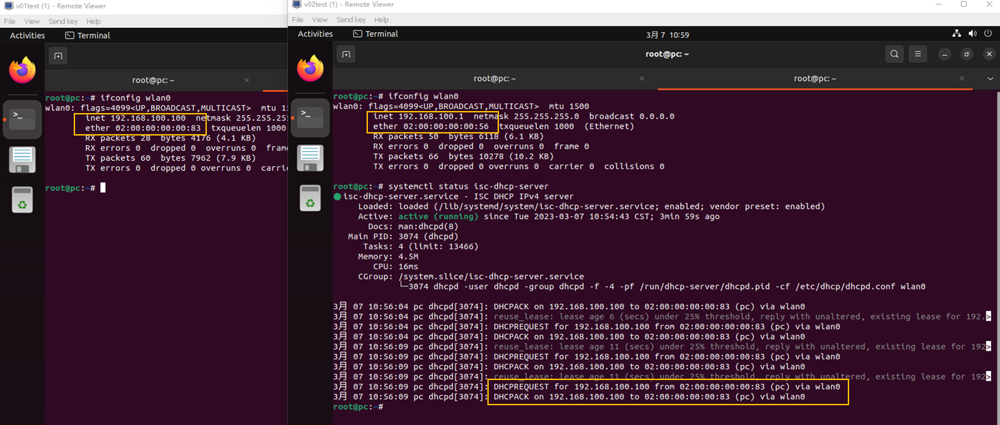
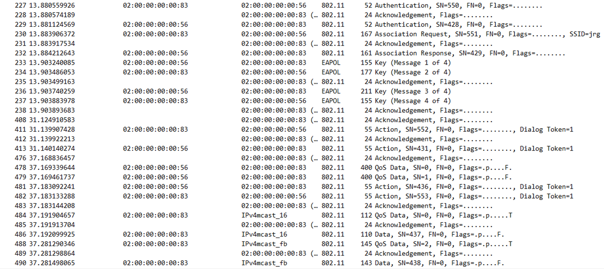

openWIFI
1. 项目仓库
2. 项目简介
一种基于Linux KVM + QEMU的虚机WIFI组网通信的方案架构。
目前基于QEMU的虚机中一般都是通过QEMU支持的ethernet net device进行通信，借助于Linux kernel中的bridge，QEMU可以模拟出多种通信方式，如virtio-net、nat等方式，不过还没有模拟WIFI通信的方式。
本项目通过修改Guest Linux kernel中的网络驱动，基于ethernet驱动来承载Wireless协议报文，以达到基于QEMU模拟的有线网卡实现无线网络WIFI通信的目的。
2.1 组网拓扑
graph TD
A[VM0, AP] --> E[QEMU, HOST KERNEL]
B[VM1, STA1] --> E
C[VM2, STA2] --> E
D[VMx, STAx ] --> E
2.2 技术架构
以两个虚机为例，其中VM0为 AP，VM1为STA，红色块图为修改模块，绿色箭头通路本项目中打通。

mac80211_to_virtio
mac80211_to_virtio driver主要作用：
- send packet：对mac80211_hwsim模块中下发的wireless frames如beacon、probe request/probe response等进行封装，并自动识别可用的（也可手动指定）virtio net device，然后发送；
- receive packet：对virtio_net模块中上发的packet进行甄别是否含有wireless frames，若有则解封、并构造wireless frames，然后寻找对应的wireless radio进行上传。

2.3 功能验证
通过无线网络获取IP地址
V01虚机（STA）通过无线网卡连接到V02虚机（AP），V01的wlan0无线网卡从监听在V02的wlan0网上的dhcpd server获取IP。

无线空口协议通信
抓取的V01（STA）和V02（AP）之前的部分通信报文。

3. 项目演进
【Todo】
- virtio_net收报文时需要甄别是否包含wireless frame，会影响收包效率，需要将重心工作放在中断下半部来做。
- 本项目现在时基于ethernet网络来收发无线报文，是否考虑QEMU直接支持WIFI的virtqueue方式，将无线帧直接通过virtqueue方式下发给host，避免进程切换和硬中断等影响效率的问题。